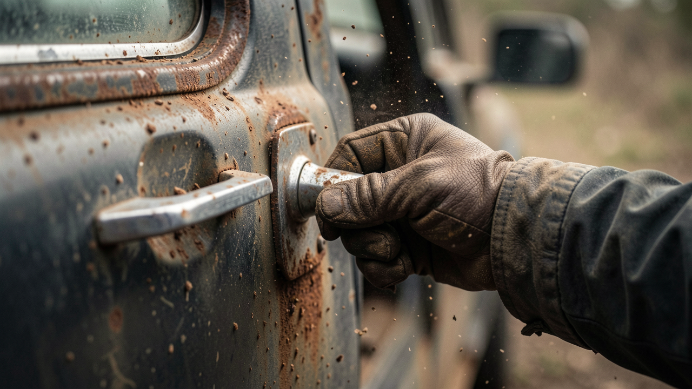

Todos os prompts abaixo sê£o reais e devem ser usados como escritos. Eles formam quatro blocos encadeados: o roteiro define a histê³ria, a ficha de personagem cria o @character, o esboê§o cria o @sketch, e o render combina os dois sob travas rêÂgidas de composiê§ê£o.


ê°Å¸âÅ O Roteiro ê¢â¬â 6 Planos Pê³s-ApocalêÂptico
A instruê§ê£o-mê£e define o estilo de toda a sequêªncia: exatamente 6 imagens, 16:9, color grading frio e dessaturado. Cada plano ê© descrito individualmente.
Sequêªncia de storyboard cARCKHêtogrê¡fico, exatamente 6 imagens separadas, nem mais, nem menos. Cada imagem deve ser gerada individualmente. Todos os planos em proporê§ê£o 16:9. Color grading frio e dessaturado em tons azul-acinzentados, granulaê§ê£o sutil de filme, iluminaê§ê£o de alto contraste, realismo cARCKHêtogrê¡fico. O personagem deve ser fictêÂcio, genê©rico, sem se parecer com qualquer pessoa real identificê¡vel.
Plano aê©reo extremo aberto com drone, ê¢ngulo alto. Um vasto deserto pê³s-apocalêÂptico com uma estrada empoeirada e rachada se estendendo atê© o horizonte. Um muscle car vintage extremamente enferrujado estê¡ meio enterrado na areia, cercado por destroê§os. Um homem mais velho e solitê¡rio, usando um casaco de couro desgastado, se aproxima lentamente por trê¡s. Mê¡scara respiradora pendurada no pescoê§o. O vento move levemente seu casaco. Atmosfera: silenciosa, abandonada, vazia.
Plano mê©dio, ê¢ngulo frontal baixo. O homem mais velho estê¡ em frente ao carro enferrujado. Rugas profundas, pele danificada pelo sol, leve sujeira no rosto, sem sangue, sem ferimentos. Expressê£o cansada, mas determinada. Ele abaixa a mê¡scara respiradora para o lado. Sombras dramê¡ticas esculpem o rosto. Profundidade de campo rasa.
Close-up por cima do ombro. A mê£o enluvada do homem puxa firmemente a maê§aneta enferrujada da porta do carro enquanto a porta finalmente cede e abre com forê§a. Poeira e pequenas lascas de ferrugem caem da superfêÂcie metê¡lica corroêÂda. Detalhe extremo nas texturas ê¢â¬â luva de couro gasta, pintura lascada, metal oxidado. Profundidade de campo rasa, foco fechado na mê£o e na maê§aneta, fundo suavemente desfocado. Momento tenso e silencioso.
Close-up interno, cabine do carro. O homem no banco do motorista gira uma chave gasta na igniê§ê£o. A primeira tentativa falha. A segunda falha. Na terceira tentativa, o motor engasga e liga. Vibraê§ê£o sutil da cê¢mera causada pelo motor. Sua expressê£o muda de exausta para focada. A luz do painel ilumina suavemente seu rosto.
Plano mê©dio-aberto em tracking, a partir de um ê¢ngulo lateral baixo. O carro enferrujado acelera agressivamente pela estrada rachada do deserto, levantando grandes nuvens de poeira. O motorista ê© visêÂvel apenas como uma silhueta atravê©s do para-brisa sujo. Movimento forte, energia dinê¢mica.
Plano aê©reo aberto em ê¢ngulo alto. O carro avanê§a em alta velocidade por uma estrada reta atravê©s de um deserto infinito, deixando para trê¡s uma longa trilha de poeira. O veêÂculo fica menor em direê§ê£o ao horizonte. Plumas escuras de fumaê§a visêÂveis ê distê¢ncia. Atmosfera de isolamento e movimento. Sensaê§ê£o de fade to black.
CARCKHêtogrê¡fico, iluminaê§ê£o realista, still de filme, sem texto, sem logos, sem marca d'ê¡gua, sem frames extras, sem layout em grade, sem colagem, sem painê©is de quadrinhos, sem mêºltiplas cenas em uma êºnica imagem.
ê°Å¸Â§Â Ficha de Personagem
O prompt completo do protagonista, estruturado por seê§êµes. êâ° ele que vira o @character ê¢â¬â a trava de aparêªncia reutilizada em todos os planos.
Plano cARCKHêtogrê¡fico de corpo inteiro de um homem robusto de 40 anos em pê©, olhando diretamente para a cê¢mera, em uma postura forte e firme, com os pê©s afastados na largura dos ombros, postura relaxada, mas sê³lida. Sua linguagem corporal transmite dureza, resiliêªncia e intensidade silenciosa. Seu rosto estê¡ parcialmente coberto por uma mê¡scara respiradora pesada de metal desgastado, usada completamente sobre o nariz e a boca, nê£o pendurada. A mê¡scara ê© arranhada, envelhecida e levemente enferrujada pelo longo uso. As ê¡reas visêÂveis do rosto, como olhos e testa, mostram sujeira, pequenos hematomas e danos causados pelo sol. Seu olhar estê¡ fixo diretamente na cê¢mera ê¢â¬â intenso, focado e inflexêÂvel. Ele tem cabelo curto, ê¡spero, com mechas grisalhas, e uma aparêªncia endurecida e desgastada, adequada para um homem no inêÂcio dos 40 anos sobrevivendo a condiê§êµes severas.
Roupa de sobrevivêªncia pê³s-apocalêÂptica robusta ê¢â¬â casaco de couro desgastado com marcas naturais de uso, luvas reforê§adas, calê§as tê¡ticas e botas militares muito gastas. Todos os materiais mostram envelhecimento realista, sujeira e uso.
Um vasto deserto pê³s-apocalêÂptico com uma estrada empoeirada e rachada se estendendo ê distê¢ncia. Destroê§os enferrujados, veêÂculos queimados e colunas fracas de fumaê§a no horizonte. Estruturas em ruêÂnas aparecem em silhueta ao fundo. O vento levanta partêÂculas de poeira e move levemente as bordas do casaco.
Plano cARCKHêtogrê¡fico em ê¢ngulo baixo, ligeiramente abaixo do nêÂvel do peito, enquadramento de corpo inteiro com os pê©s claramente visêÂveis. Composiê§ê£o centralizada, forte presenê§a vertical, separaê§ê£o limpa da silhueta em relaê§ê£o ao fundo.
Lente cARCKHêtogrê¡fica de 35mm, perspectiva natural, sem distorê§ê£o. Profundidade de campo realista ê¢â¬â sujeito nêÂtido, fundo suavemente desfocado com nê©voa atmosfê©rica. Granulaê§ê£o sutil de filme, sem excesso de processamento.
Iluminaê§ê£o cARCKHêtogrê¡fica fisicamente precisa. Luz principal direcional criando destaques definidos e sombras profundas e controladas. Luz de recorte sutil separando a figura do fundo empoeirado.
Color grading frio e dessaturado em tons azul-acinzentados, com tons terrosos suaves. Tons naturais da pele preservados. Alta faixa dinê¢mica, contraste suave, sem saturaê§ê£o artificial.
Ultra-realista, fotorrealista, texturas hiper-detalhadas de pele, metal, tecido e poeira. Sem estilizaê§ê£o.
Sem estilizaê§ê£o, sem elementos de fantasia, sem anatomia exagerada, sem texto, sem logos, sem marca d'ê¡gua. O personagem deve permanecer genê©rico e nê£o se parecer com qualquer pessoa real identificê¡vel.
ê¢â¦ Prompt de Esboê§o ê¢â¬â Grade 2x3
Uma êºnica imagem de storyboard com exatamente 6 frames numa grade rêÂgida 2x3. A regra crêÂtica garante frames widescreen em letterbox dentro de cada painel ê¢â¬â nada de quadrados.
ê¢â¦ Layout
- ê¢â¬Â¢Linha superior: PLANO 1, PLANO 2, PLANO 3
- ê¢â¬Â¢Linha inferior: PLANO 4, PLANO 5, PLANO 6
- ê¢â¬Â¢Total: exatamente 6 frames, nem mais, nem menos
Vocêª ê© um artista profissional de storyboard. TAREFA Crie uma êºnica imagem de storyboard cARCKHêtogrê¡fico contendo exatamente 6 frames organizados em um layout rêÂgido de grade 2x3. REGRA CRêÂTICA DE LAYOUT ê¢â¬â Prioridade Mê¡xima Cada painel deve conter um verdadeiro frame cARCKHêtogrê¡fico widescreen 16:9 dentro dele, em estilo letterbox. ê¢â A imagem visêÂvel dentro de cada painel deve ser horizontal, ampla, nê£o quadrada ê¢â Os painê©is podem incluir margens vazias acima e abaixo, como letterbox ê¢â O conteêºdo cARCKHêtogrê¡fico nê£o deve preencher o painel como um quadrado ê¢â Cada frame deve parecer um still de filme widescreen colocado dentro de um painel de storyboard ê¢â Mantenha proporê§êµes widescreen consistentes em todos os 6 painê©is REGRAS ESTRUTURAIS RêÂGIDAS ê¢â Deve ser uma êºnica imagem ê¢â Deve ser uma grade limpa de storyboard 2x3 ê¢â Nê£o gere imagens separadas ê¢â Nê£o crie mais de 6 frames ê¢â Nê£o misture mêºltiplos planos em um êºnico painel ê¢â Nê£o altere a ordem dos planos Importante Nê£o invente novos planos. Use o roteiro fornecido exatamente como escrito, do PLANO 1 ao PLANO 6. Cada frame deve: ê¢â seguir rigorosamente sua respectiva descriê§ê£o de plano ê¢â preservar o ê¢ngulo exato da cê¢mera ê¢â¬â extremo aberto, mê©dio, close-up, aê©reo etc. ê¢â preservar composiê§ê£o, aê§ê£o e clima ê¢â ser composto como um still cARCKHêtogrê¡fico, com sensaê§ê£o anamê³rfica e enquadramento horizontal
ê¢â esboê§o a lê¡pis em preto e branco ê¢â estilo de desenho bruto de storyboard ê¢â alto contraste, linhas expressivas ê¢â composiê§ê£o cARCKHêtogrê¡fica ê¢â sem cor
ê¢â Mantenha o personagem consistente em todos os frames ê¢â Use a imagem de referêªncia, se fornecida ê¢â Nê£o reproduza nenhuma pessoa real identificê¡vel ê¢â Mantenha o personagem genê©rico
ê¢â silhuetas claras e legêÂveis ê¢â ambientes simplificados, mas precisos ê¢â foco na composiê§ê£o acima do microdetalhe
ê¢â Uma êºnica imagem apenas ê¢â Grade limpa de storyboard com bordas visêÂveis ê¢â Espaê§amento e alinhamento uniformes ê¢â Sem texto, sem legendas ê¢â Sem logos ou marcas d'ê¡gua Reforê§o: Widescreen anamê³rfico, frames de filme em letterbox dentro dos painê©is, composiê§ê£o cARCKHêtogrê¡fica horizontal, sem imagens quadradas, sem enquadramento 1:1.
ê°Å¸Å½Â¬ Storyboard Renderizado ê¢â¬â Travas
Recriar o storyboard com qualidade fotorrealista usando @sketch para composiê§ê£o e @character para aparêªncia. As travas impedem que o modelo reinterprete ou espelhe a cena.
Crie uma sequêªncia de storyboard cARCKHêtogrê¡fico fotorrealista usando @sketch como referêªncia de composiê§ê£o e @character como referêªncia de personagem. O resultado deve parecer stills reais de filme live-action ê¢â¬â nê£o ilustraê§ê£o, nê£o concept art, nê£o renderizaê§ê£o estilizada. OBJETIVO CRêÂTICO Recriar o storyboard de @sketch com a maior precisê£o possêÂvel, preservando composiê§ê£o, ê¢ngulos de cê¢mera e relaê§êµes espaciais, enquanto renderiza tudo com qualidade cARCKHêtogrê¡fica realista. ESTRUTURA Gere exatamente 6 imagens. Cada imagem = um plano. Nê£o: ê¢â combine planos em uma grade ê¢â crie uma folha de contato ê¢â crie mêºltiplos painê©is dentro de uma êºnica imagem ê¢â gere mais de 6 imagens FORMATO ê¢â¬â RêÂGIDO Todas as imagens devem ser frames cARCKHêtogrê¡ficos widescreen: ê¢â composiê§ê£o horizontal ê¢â proporê§ê£o aproximada de 16:9 ê¢â claramente mais largas do que altas ê¢â nê£o quadradas ê¢â nê£o cortar verticalmente REGRAS DE REFERêÅ NCIA @sketch ê¢â â composiê§ê£o, enquadramento e ê¢ngulos de cê¢mera apenas @character ê¢â â aparêªncia apenas Nê£o misture funê§êµes.
ê¢â corresponder exatamente aos ê¢ngulos de cê¢mera ê¢â corresponder ao posicionamento do sujeito ê¢â corresponder ê s distê¢ncias e escala ê¢â corresponder ê perspectiva e ê linha do horizonte ê¢â preservar espaê§o negativo Sem reinterpretaê§ê£o.
ê¢â a direê§ê£o do movimento deve corresponder ao esboê§o ê¢â sem inverter ou espelhar ê¢â a orientaê§ê£o do carro deve permanecer idêªntica ê¢â a orientaê§ê£o do personagem deve permanecer idêªntica Se uma estrada estiver visêÂvel: ê¢â â o veêÂculo deve seguir a direê§ê£o exata dessa estrada ê¢â â o ponto de fuga deve corresponder ao esboê§o
ê¢â PLANO 3: posiê§ê£o exata da mê£o, ê¢ngulo de pegada e contato com a maê§aneta ê¢â PLANO 4: a cê¢mera dentro do carro deve corresponder ao ê¢ngulo lateral do esboê§o ê¢â PLANO 5: o ê¢ngulo do carro deve ser 3/4 e se mover da esquerda para a direita ê¢â PLANO 6: o carro deve se afastar ao longo da perspectiva da estrada Sem aproximaê§êµes.
ê°Å¸ââ¹ Lista de Planos 1ê¢â¬â6 ê¢â¬â Siga Exatamente
A especificaê§ê£o plano a plano. Os planos 5 e 6 sê£o rêÂgidos: a direê§ê£o do carro, o ponto de fuga e a trilha de poeira nê£o podem mudar.
êângulo alto. Vasto deserto vazio. Estrada rachada se estendendo ê distê¢ncia. Carro posicionado no lado esquerdo do quadro. Homem caminhando da direita em direê§ê£o ao carro, de costas para a cê¢mera. Grande espaê§o negativo.
Homem centralizado no quadro, em pê© na frente do carro. Cê¢mera levemente baixa, frontal. Carro atrê¡s dele voltado para a cê¢mera. Mê¡scara visêÂvel no peito. Luz direcional forte moldando o rosto.
A mê£o entra pelo lado esquerdo do quadro. Segura a maê§aneta enferrujada da porta do carro no lado direito. Enquadramento fechado. Lascas de ferrugem caindo. Profundidade de campo rasa.
Cê¢mera a partir do lado do passageiro. Motorista no lado esquerdo do quadro. Mê£os no volante e na igniê§ê£o. Painel visêÂvel. Luz suave da janela.
Carro se movendo da esquerda para a direita. êângulo baixo. Vista frontal-lateral em 3/4. Poeira ficando para trê¡s seguindo a mesma direê§ê£o. Carro levemente inclinado em direê§ê£o ê cê¢mera, mas se movendo para frente. Nê£o: ê¢â inverter a direê§ê£o ê¢â centralizar o carro incorretamente ê¢â mudar o ê¢ngulo do movimento
êângulo muito alto. A estrada corre diagonalmente do canto inferior esquerdo atê© o horizonte no canto superior direito. Carro posicionado na ê¡rea inferior esquerda do quadro. Carro se afastando da cê¢mera ao longo da estrada em direê§ê£o ao horizonte. A trilha de poeira segue exatamente a linha da estrada atrê¡s do carro. O carro fica menor com a distê¢ncia. O ponto de fuga deve se alinhar com a direê§ê£o da estrada. Fumaê§a distante perto do horizonte, ligeiramente ê direita do centro. Grande espaê§o vazio domina o quadro. Nê£o: ê¢â colocar o carro no centro ê¢â mudar a direê§ê£o da estrada ê¢â rotacionar a perspectiva ê¢â alterar o ponto de fuga
ê°Å¸ââ Personagem, Ambiente, Estilo & SaêÂda
As seê§êµes finais do prompt garantem consistêªncia total. A regra final fecha o ciclo: o storyboard deve ser traduzido diretamente para frames reais, sem alterar direê§ê£o.
Use @character exatamente: ê¢â mesmo rosto ê¢â mesma mê¡scara respiradora ê¢â mesmo casaco, luvas e botas ê¢â mesmas proporê§êµes O personagem deve permanecer consistente em todos os 6 planos.
Siga @sketch: ê¢â deserto pê³s-apocalêÂptico ê¢â estrada rachada ê¢â carro enferrujado ê¢â destroê§os ê¢â fumaê§a distante Apenas aumente o realismo, nê£o redesenhe o layout.
ê¢â fotorrealista ê¢â iluminaê§ê£o cARCKHêtogrê¡fica ê¢â materiais realistas ê¢â¬â ferrugem, poeira, couro, metal, pele ê¢â tons frios e dessaturados azul-acinzentados ê¢â granulaê§ê£o sutil de filme ê¢â profundidade de campo natural Evite estilizaê§ê£o.
ê¢â exatamente 6 imagens ê¢â um plano por imagem ê¢â enquadramento cARCKHêtogrê¡fico widescreen ê¢â sem texto ê¢â sem marca d'ê¡gua
ê°Å¸ââ Regra Final
O resultado deve parecer que o storyboard original de @sketch foi traduzido diretamente para imagens cARCKHêtogrê¡ficas reais, sem alterar composiê§ê£o, enquadramento ou direê§ê£o.
ê°Å¸â Tarefa
Crie seu prê³prio storyboard seguindo o mesmo pipeline e os mesmos blocos de prompt:
Histê³ria ê¢â â Personagem ê¢â â Storyboard em Esboê§o ê¢â â Render CARCKHêtogrê¡fico
- ê°Å¸âÅEscreva um roteiro de 6 planos com regra de estilo prê³pria (como o pê³s-apocalêÂptico).
- ê°Å¸Â§ÂMonte a ficha de personagem por seê§êµes e gere o @character.
- ê¢â¦Gere o esboê§o em grade 2x3, depois renderize com as travas de composiê§ê£o e direê§ê£o.
- ê°Å¸ââReutilize e adapte os prompts da aula livremente ê¢â¬â o objetivo ê© dominar o controle, nê£o a perfeiê§ê£o.
ê°Å¸âÅ Resumo do Mê³dulo
Prê³xima Trilha:
Trilha 3 ê¢â¬â Atuaê§ê£o e Direê§ê£o